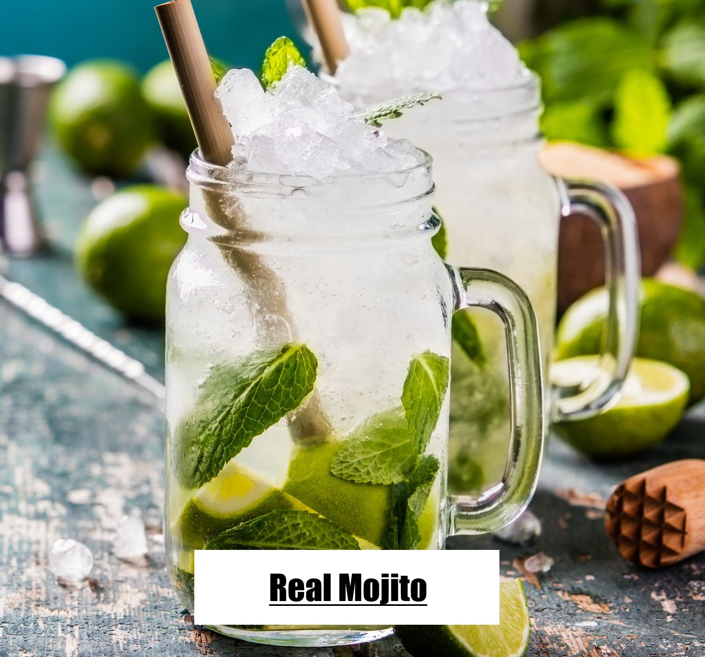
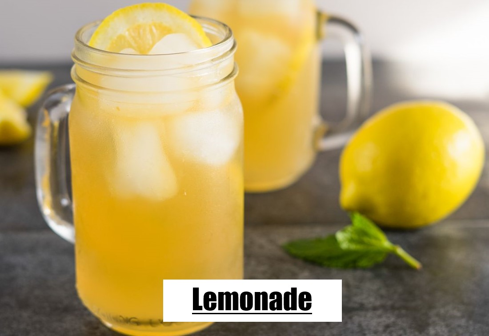
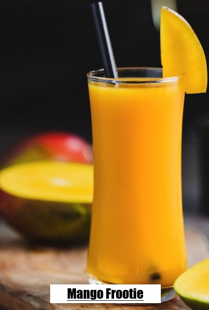
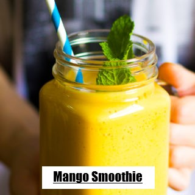
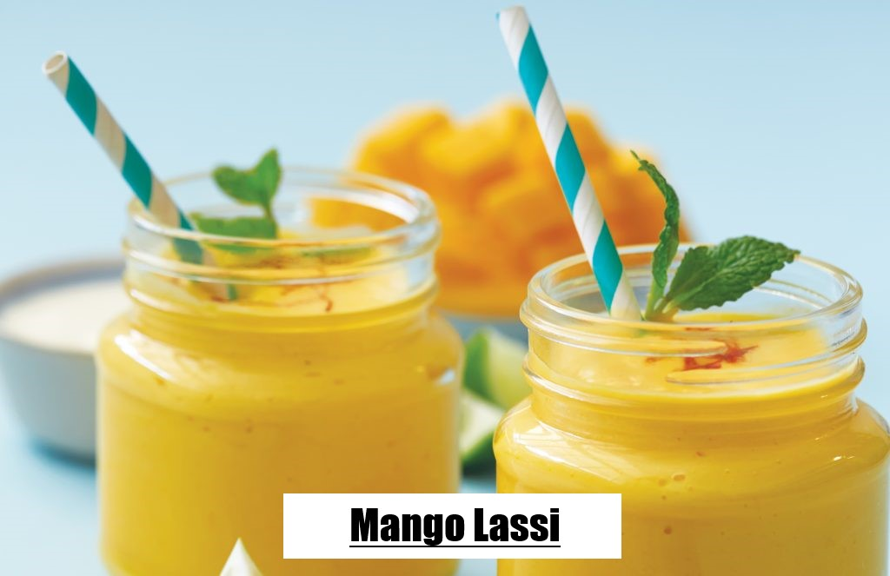
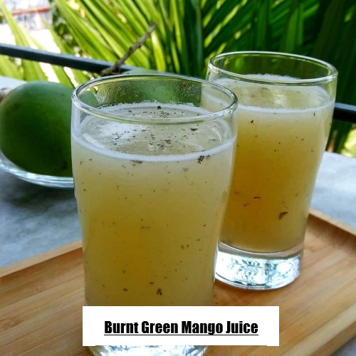

×
Info! Recipe details are directly from our kitchen or from our Moms' recipe notes.
Cooking videos provided here are from internet. That's why, they can vary a little bit.
We apologize! You can try any of them or customize your dish in your own way. Good luck!!

About
Mojito is a traditional Cuban highball. Traditionally, a mojito is a cocktail that consists of five ingredients: white rum, sugar, lime juice, soda water, and mint. Its combination of sweetness, citrus, and herbaceous mint flavors is intended to complement the rum, and has made the mojito a popular summer drink.Ingredients
- 10 fresh mint leaves
- 1/2 lime, cut into 4 wedges
- 2 tablespoons white sugar, or to taste
- 1 cup ice cubes
- 1 1/2 fluid ounces white rum
- 1/2 cup club soda
Direction
Related Video
Step 2:Fill the glass almost to the top with ice. Pour the rum over the ice, and fill the glass with carbonated water. Stir, taste, and add more sugar if desired. Garnish with the remaining lime wedge.

About
Iced tea is a form of cold tea. Though usually served in a glass with ice, it can refer to any tea that has been chilled or cooled. It may be sweetened with sugar, syrup and/or apple slices. Iced tea is also a popular packaged drink and can be mixed with flavored syrup, with multiple common flavors including lemon, raspberry, lime, passion fruit, peach, orange, strawberry, and cherry.While most iced teas get their flavor from tea leaves (Camellia sinensis), herbal teas are sometimes served cold and referred to as iced tea. Iced tea is sometimes made by a particularly-long steeping of tea leaves at a lower temperature (one hour in the sun versus 5 minutes at 80–100 °C or 180–212 °F), which is known as sun tea.
Ingredients
- 4 teabags
- 1 tbsp sugar (optional)
- 1-2 lemons, sliced
- mint sprigs, to serve
- ice cubes, to serve
Direction
Related Video
Step 2:Stir well, then discard the teabags and lemon slices and allow to cool to room temperature before transferring to the fridge to chill. The tea will keep for 2-3 days covered in the fridge.
Step 3:When ready to serve, fill glasses with ice and the remaining lemon slices. Pour in the chilled tea and garnish with a sprig of mint.

About
Lemonade can be any variety of sweetened or unsweetened beverages found throughout the world, which are traditionally all characterized by a lemon flavor. Most lemonade varieties can be separated into two distinct types: cloudy and clear; each is known simply as "lemonade" in countries where dominantIngredients
- 1 cup white, granulated sugar (can reduce to 3/4 cup)
- 1 cup water (for the simple syrup)
- 1 cup lemon juice
- 2 to 3 cups cold water (to dilute)
Related Video
Step 2: While the water is heating for the simple syrup, juice your lemons. Depending on the size of the lemons, 4 to 6 of them should be enough for one cup of juice.
Step 3: Pour the juice and the simple syrup sugar water into a serving pitcher. Add 2 to 3 cups of cold water and taste. Add more water if you would like it to be more diluted (though note that when you add ice, it will melt and naturally dilute the lemonade). If the lemonade is a little sweet for your taste, add a little more straight lemon juice to it. Refrigerate 30 to 40 minutes.

Ingredients
- 500 gms ripe mangoes
- 200 gms raw mango
- 1/4 cup sugar or as required
- 2 cups ice cubes
- 6 cups water
Direction
Related Video
Step 2: Blend the cooked mangoes into a smooth puree.Now mix the mango puree and stock very well.
Step 3:Add 1-3 cups water as per required consistency.Refrigerate for 3-4 hours before serving. Serve with ice cubes if desired.

About
This super creamy and refreshing mango smoothie is the ultimate summertime smoothie, just perfect to cool you down on a hot summer day.Ingredients
- 1/2 cup milk(250 gm)
- 3 cups Frozen Mango
- 1 large Frozen banana
- 1/2 cup greek yogurt
Related Video
Step 2: Blend until completely smooth.Pour until 2 glasses and serve, garnished with lime and mint if desired.

About
Lassi is a popular traditional dahi-based drink that originated in India. Lassi is a blend of yoghurt, water, spices and sometimes fruit. Namkeen lassi is similar to doogh, while sweet and mango lassis are like milkshakes. Bhang lassi is infused with the drug cannabis in the form of bhang.Ingredients
- 1 cup plain yogurt
- 1/2 cup milk
- 1 cup chopped very ripe mango (see how to peel and chop mango), frozen chopped mango, or a cup of canned mango pulp
- 4 teaspoons honey or sugar, more or less to taste
- A dash of ground cardamom (optional)
- Ice (optional)
Direction
Related Video
Step 2:Sprinkle with a tiny pinch of ground cardamom to serve. The lassi can be kept refrigerated for up to 24 hours.

Ingredients
- 2 green mangoes
- Sugar to taste
- 1 teaspoon black salt
- 1/2 tablespoon mint leaves
- 2 green chilies
- Water as needed (2-3 cups )
Direction
Related Video
Step 2:Allow to cool; de-skin & de seed the mangoes. Keep the pulp aside. Blend all ingredients together in a blender. Water, sugar, black salt, mouri (aniseed), and green or red chilies. Put the mixture in a blender and blend well.
Step 3:Allow to cool; de-skin & de seed the mangoes. Keep the pulp aside. Blend all ingredients together in a blender. Water, sugar, black salt, mouri (aniseed), and green or red chilies. Put the mixture in a blender and blend well.